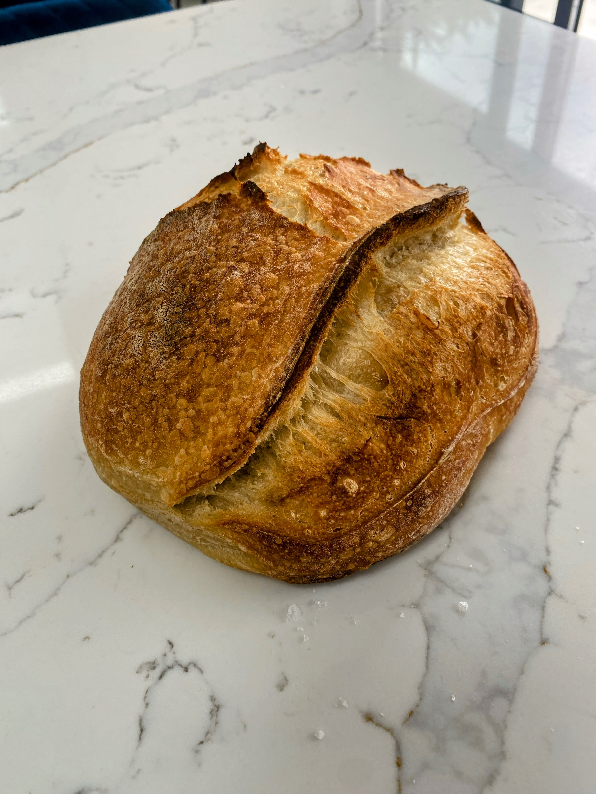

The Basic Loaf: Foolproof Sourdough Recipe
This is the simple recipe! It's designed to be easy, flexible, and low-effort, relying on time to develop flavour. Follow these steps for a delicious loaf. I've helped lots of friends, family and people online to bake some amazing loaves. I love to share my techniques and advice and watch others make some amazing loaves of bread!
Ingredients (for 1 Loaf)
- 75-100g active sourdough starter (flexible amount)
- 180g lukewarm water (approx. 35-40°C / 95-104°F)
- 280g strong white bread flour
- 5g fine sea salt
Method (Simple 2-Day Process)
This takes two days but it can be done in one! Day 1 is mixing ingredients together, waiting for slow fermentation (hello flavour!) Day 2 is the bake. It's designed to fit around a busy schedule.
Quick Overview
-
Day 1 AM:
Mix shaggy dough, rest briefly, quick final mix.
-
Day 1 Afternoon/Evening:
Long bulk ferment (6+ hrs at room temp, mostly hands-off). Shape dough.
-
Day 1 Evening:
Short counter proof (2-3 hrs).
-
Day 1 Night → Day 2:
Cold proof in fridge (8-24+ hrs).
-
Day 2 Bake Time:
Preheat oven & Dutch oven. Score cold dough. Bake lid on, then lid off. Cool completely.
Day 1: Mixing & Proofing
- Combine Ingredients (Morning): In a large bowl, combine your 75-100g active starter, 180g lukewarm water, 280g strong bread flour, and 5g salt. Use your hands or a sturdy spoon to mix everything roughly until no dry flour remains. It will look like a shaggy, messy ball – that's perfect! Cover the bowl (with cling film, a shower cap, or a plate).
- Short Rest & Mix: Let the covered bowl sit for about 10-15 minutes. Then, spend just 1 minute using wet hands to gently fold the dough over itself in the bowl, or use your spoon/spatula to bring it together more uniformly. It doesn't need kneading, just make sure it's a bit more cohesive than the initial shaggy mass. Cover again.
-
Bulk Fermentation (Time Does the Work): Now the easy part! Leave the covered bowl at room temperature for around 4-6 hours. The goal is for the dough to roughly double in size and look noticeably puffier, with some bubbles visible. Room temperature makes a big difference here – warmer rooms might take closer to 4 hours, cooler rooms could take 6 hours. Focus on the visual cues (increased in size - it doesn't have to double for amazing results, airy look) more than the clock.
Optional: Stretch & Folds: If you're around and fancy it, you can perform 2-4 sets of stretch and folds during the first 3-4 hours of fermentation. To do this: with wet hands, reach under one side of the dough, gently stretch it upwards, and fold it over the top. Rotate the bowl 90 degrees and repeat 3 more times (total 4 stretches/folds per set). Wait 45-60 minutes between sets. This builds strength but is *optional* for this recipe. [Link to Techniques page later].
- Shape: Once the dough looks ready (increased size), gently tip it out onto a lightly floured worktop. Gently press the dough out slightly into a rough rectangle. Fold the top third down, the bottom third up (like a letter), then fold the left third over and the right third over. Flip it over so the seams are underneath and gently cup your hands around the dough, rotating it on the counter to create surface tension and form a round ball (boule) or an oval (batard). Don't handle it too roughly – keep the air inside! [Link to Techniques page later].
- Prepare Banneton & Final Proof Prep: Generously dust your banneton (or a medium bowl lined with a clean, non-fluffy tea towel) with rice flour. Rice flour is key as it doesn't absorb moisture like regular flour, preventing sticking. Gently place the shaped dough into the banneton, seam-side facing UP.
- Counter Proof: Cover the banneton (a plastic bag or shower cap works well). Leave it on your worktop at room temperature for 1-2 hours. It might puff up slightly more.
- Cold Proof (Overnight): Transfer the covered banneton to the fridge. Let it rest and develop flavour overnight. You can leave it longer, up to 24 hours if needed.
Day 2: Baking
- Preheat Oven & Dutch Oven: When you're ready to bake, place your Dutch oven (with its lid a jar) inside your main oven. Preheat the oven to 235°C (455°F). It's crucial the Dutch oven gets incredibly hot, so let it preheat for at least 20 minutes *after* the oven reaches temperature (30 - 40 mins total preheat time is ideal).
- Prepare Dough for Baking: Just before you bake, take the banneton out of the fridge. Place a piece of baking parchment paper over the top of the banneton, then quickly and carefully flip the whole thing over so the dough releases onto the parchment paper. Lift off the banneton/bowl.
- Score the Loaf: Using a baker's lame or a sharp knife, make one confident, decisive score across the top of the loaf (about 1-2 cm or 1/2 inch deep). A simple curve or a cross works well for beginners. This allows the bread to expand when baking. [Link to Techniques page later].
- Bake (Lid On): Carefully take the *very hot* Dutch oven out of the oven. Remove the lid. Using the parchment paper as a sling, carefully lower your scored dough into the hot Dutch oven. Put the lid back on immediately. Place the Dutch oven back into the main oven. Bake for **25 minutes**.
- Bake (Lid Off): After 25 minutes, carefully remove the Dutch oven lid (be cautious of steam!). Reduce the oven temperature to 220°C (430°F). Continue baking with the lid *off* for another **20 minutes**, or until the crust is a deep golden brown colour and feels firm.
- Cool Completely: Using oven gloves, carefully lift the baked loaf out of the Dutch oven (you can use the parchment paper) and place it on a wire rack. Now for the hardest part: let it cool completely! This takes *at least* 30 to 60 minutes, ideally longer. Slicing into hot bread can result in a gummy texture as the inside is still setting. Patience here is rewarded!
- Enjoy! Your bread is ready to go! Check out my ideas page for some ideas on sandwich fillings and other uses for your bread. You can also freeze any leftovers (if there are any!) for later use. Just slice it first, then wrap it tightly in cling film or foil and place it in a freezer bag. When you're ready to eat, just take out a slice and toast it straight from frozen!